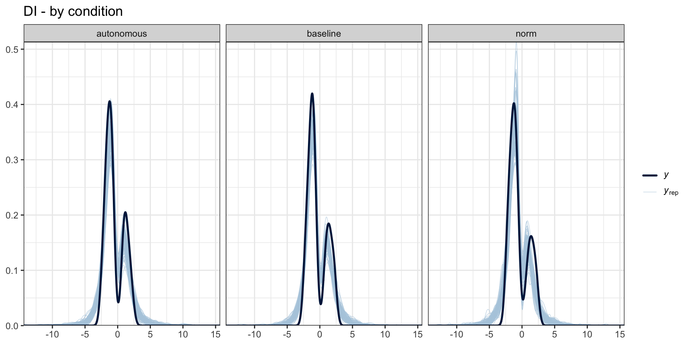
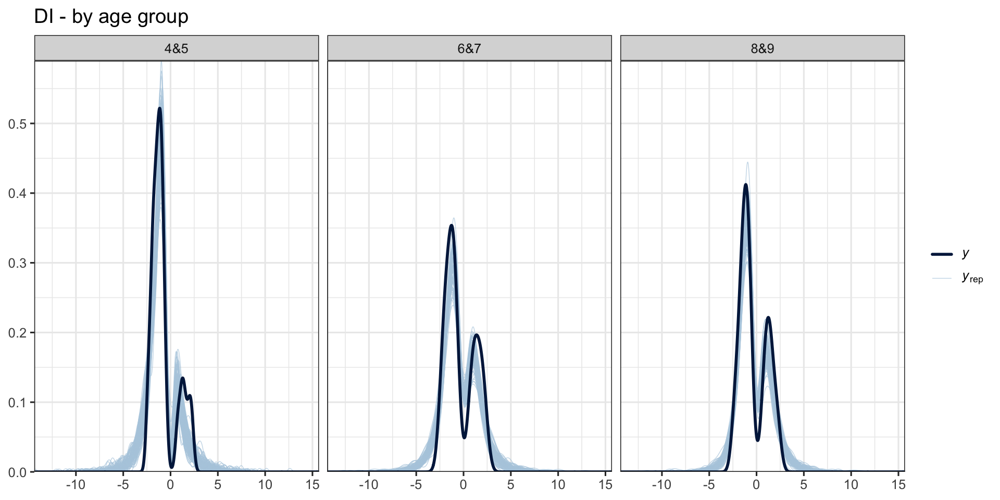
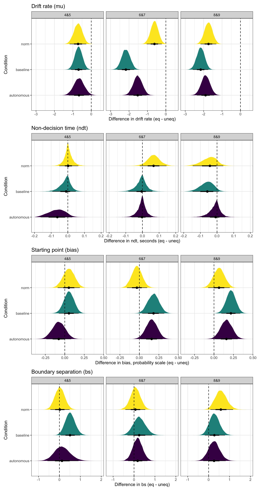
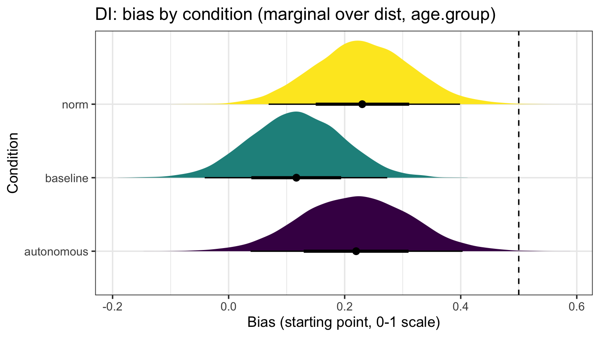
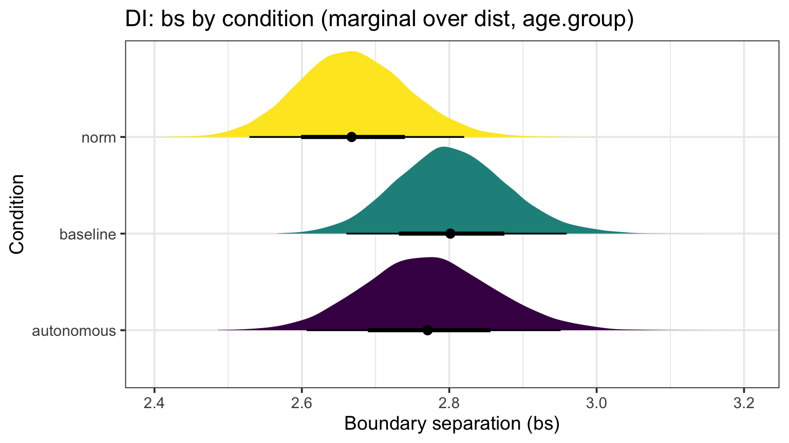

── Attaching core tidyverse packages ──────────────────────── tidyverse 2.0.0 ──
✔ dplyr 1.2.1 ✔ readr 2.2.0
✔ forcats 1.0.1 ✔ stringr 1.6.0
✔ ggplot2 4.0.3 ✔ tibble 3.3.1
✔ lubridate 1.9.5 ✔ tidyr 1.3.2
✔ purrr 1.2.2
── Conflicts ────────────────────────────────────────── tidyverse_conflicts() ──
✖ dplyr::filter() masks stats::filter()
✖ dplyr::lag() masks stats::lag()
ℹ Use the conflicted package (<http://conflicted.r-lib.org/>) to force all conflicts to become errors
library(brms)
Loading required package: Rcpp
Loading 'brms' package (version 2.23.0). Useful instructions
can be found by typing help('brms'). A more detailed introduction
to the package is available through vignette('brms_overview').
Attaching package: 'brms'
The following object is masked from 'package:stats':
ar
library(cmdstanr)
This is cmdstanr version 0.9.0
- CmdStanR documentation and vignettes: mc-stan.org/cmdstanr
- CmdStan path: /Users/jasongeller/.cmdstan/cmdstan-2.37.0
- CmdStan version: 2.37.0
A newer version of CmdStan is available. See ?install_cmdstan() to install it.
To disable this check set option or environment variable cmdstanr_no_ver_check=TRUE.
library(emmeans)
Welcome to emmeans.
Caution: You lose important information if you filter this package's results.
See '? untidy'
Attaching package: 'tidybayes'
The following object is masked from 'package:parameters':
parameters
The following object is masked from 'package:bayestestR':
hdi
The following objects are masked from 'package:brms':
dstudent_t, pstudent_t, qstudent_t, rstudent_t
This document is rendered by the targets pipeline (_targets.R; run targets::tar_make() from the project root) and only reads its results. The model definition — formula, family, priors, starting values, and sampler settings — lives once in R/models.R, shared with the AI group, so the two models are identical by construction; the code shown in the Model Specification chunks below is pulled from that file with knitr::read_chunk(). Shared preprocessing lives in Scripts/data_prep.R, run once by the pipeline as the prepped_data target. Paths use here::here(), resolved from the project root, so this works regardless of which directory actually renders the document.
store <-here("_targets")explicit_di <-tar_read(prepped_data, store = store)$dihead(explicit_di)
# A tibble: 6 × 9
sn condition duration trialnum dist distribution dec age.group
<fct> <fct> <dbl> <chr> <chr> <chr> <dbl> <fct>
1 sn1 autonomous 1.63 1 uneq di 0 8&9
2 sn1 autonomous 0.833 4 eq di 1 8&9
3 sn1 autonomous 1.57 5 eq di 1 8&9
4 sn1 autonomous 1 6 eq di 1 8&9
5 sn1 autonomous 1.20 7 uneq di 0 8&9
6 sn1 autonomous 2.13 8 uneq di 1 8&9
# ℹ 1 more variable: dec_recode <dbl>
# Primary vs weak-prior fit: equal - unequal contrasts and convergence,# computed by the pipeline (summarize_fit() in R/sensitivity.R) and quoted# inline in the Prior sensitivity check below.sens_main <-tar_read(summary_di_informative, store = store)sens_weak <-tar_read(summary_di_weak, store = store)sens_changes <-lapply(setNames(nm =names(ddm_parameters)),function(p) credibility_changes(sens_main, sens_weak, p))
Model Specification
Same model class as ddm-ai.qmd: a hierarchical Bayesian drift diffusion model (Wiener process; Ratcliff, 1978) fit with brms (Bürkner, 2017) via Stan (Carpenter et al., 2017), sampled with cmdstanr, decomposing each trial’s response time and choice into drift rate (mu), non-decision time (ndt), starting point (bias), and boundary separation (bs).
Fixed and random effects
Identical structure to the AI document: mu, ndt, bias, and bs each get the full condition * dist * age.group factorial structure, coded as 0 + condition:dist:age.group — one directly-interpretable parameter per condition x dist x age group cell, rather than a main-effects-plus-interactions decomposition. This coding is necessary for a shared prior scale on every coefficient to translate into an equal implied prior on every cell’s mean (see ddm-ai.qmd‘s Fixed and random effects section for the prior-predictive check establishing this). By-subject random intercepts and slopes for dist are included on mu, bs, and bias — one correlated 6-dimensional random-effects block per subject ((1 + dist | p | sn) on all three, sharing the group id p), matching the structure now used in ddm-ai.qmd so both groups’ models are directly comparable. ndt still has no random effects: unlike bs/bias (which lacked the full factorial fixed-effects structure the first time random effects were tried on them, and were revisited once they got it), ndt always had that structure, so its earlier divergences reflect a genuine identifiability limit rather than a missing-structure artifact — see ddm-ai.qmd’s Fixed and random effects and Priors sections for the full history and the convergence/weak-identification diagnostics this produced there.
Same as AI: mu identity, ndt identity (bounded via prior, not link), bias logit (constrains to (0,1)), bs identity (now with the full condition:dist:age.group structure too, so positivity is enforced via the prior’s lb = 0, not the link — same mechanism as ndt).
Priors were specified for every modeled parameter, matching the advantageous-inequity model exactly so the two groups remain directly comparable, and were not uniformly weakly informative. For the fixed effects, drift rate, starting point, and boundary separation received weakly informative priors — Normal(0, 1) on drift rate, Normal(0, 1) (logit scale) on starting point, and Normal(2, 1) truncated to be positive on boundary separation — with posterior SDs an order of magnitude narrower than these priors, indicating the data, not the prior, determined the estimates. Non-decision time received a more concentrated fixed-effect prior, Normal(0.3, 0.1) truncated to [0, minimum RT], reflecting its comparatively weak identifiability from RT and choice data alone. By-subject random intercepts and slopes for split type (equal vs. unequal) were included on drift rate, boundary separation, and starting point, correlated within subject; their standard deviations used the same deliberately informative — not weakly informative — Normal(0, 0.03) truncated-positive prior adopted for the advantageous-inequity group, rather than a field-standard default (e.g., HDDM’s HalfNormal(2), HalfNormal(0.1), and HalfNormal(0.05) for the analogous parameters; Wiecki et al., 2013). This group has an equally sparse per-subject design (125 subjects, median 5 trials per split-type condition, range 2–6), and the empirical justification for this departure from convention — documented sampler divergence under looser priors, and a head-to-head substitution of HDDM’s default scales that avoided divergence but inflated every random-effect SD 2- to 10-fold — was established in the advantageous-inequity model and adopted here by design rather than re-derived independently. A second, fully-fit model using weakly informative priors throughout — including HDDM’s own default scales on the random-effect SDs — was run as a formal sensitivity check for this group too (see Prior sensitivity check below): unlike the advantageous-inequity group, where boundary separation’s findings turned out to depend substantially on this choice, this group’s results are essentially prior-robust — each parameter shows at most one condition-by-age cell changing credibility status, none of them the cells the Results section below leans on. Two other robustness questions are addressed elsewhere and are worth distinguishing from this one: whether adding random effects to bs/bias at all changes anything (Justification for the random-effect prior scale in ddm-ai.qmd, point 5 — it does not, under the 0.03 prior in both), and whether this group’s prior scale sensitivity might differ from the advantageous-inequity group’s (it does — see below).
ddm_prior_informative <-function() { brms::prior(normal(0, 1), class = b) +# drift rate (mu) fixed effects brms::prior(normal(0.3, 0.1), class = b, dpar = ndt, lb =0, ub ="min_Y") +# ndt fixed effects brms::prior(normal(0, 1), class = b, dpar = bias) +# bias, logit scale: 0.5 <-> logit 0 brms::prior(normal(2, 1), class = b, dpar = bs, lb =0) +# bs fixed effects; centered near the pooled single-parameter fit (~2.6-2.7) brms::prior(normal(0, 0.03), class = sd, group = sn, lb =0) +# by-subject random effects (mu) brms::prior(normal(0, 0.03), class = sd, dpar = bs, group = sn, lb =0) +# by-subject random effects (bs) -- same tight scale as mu, made explicit brms::prior(normal(0, 0.03), class = sd, dpar = bias, group = sn, lb =0) # by-subject random effects (bias, logit scale) -- same tight scale again}
bs now gets its own explicit prior (normal(2, 1), lb = 0) rather than riding on brms’s default — see ddm-ai.qmd’s equivalent note for why this became necessary once bs got a 0 + ... predictor formula.
bs‘s and bias’s random-effect SD priors use the same deliberately tight normal(0, 0.03) scale as mu’s, matching ddm-ai.qmd exactly rather than each group picking its own scale — this keeps the two groups’ models directly comparable and avoids re-litigating the choice per group. See ddm-ai.qmd’s “Are these priors weakly identified?” and “Justification for the random-effect prior scale” sections for the full case: the sparse per-subject trial counts this tight scale is compensating for, this project’s own documented divergence history with looser priors, a direct head-to-head test against HDDM’s much wider default priors (which reproduced the failure mode in a form Stan’s divergence diagnostic doesn’t catch), and a robustness check showing the reported results don’t depend on this specific choice.
Prior sensitivity check: weak vs. informative
Same rationale and same weak-prior specification as ddm-ai.qmd’s equivalent section: fixed-effect SDs tripled, ndt’s [0, min_Y] truncation kept (structural identifiability requirement, not a strength-of-belief choice), and random-effect SDs switched to HDDM’s own defaults (HalfNormal(2)/0.1/0.05 for mu/bs/bias) in place of normal(0, 0.03).
ddm_prior_weak <-function() { brms::prior(normal(0, 3), class = b) +# drift rate (mu) fixed effects -- 3x wider brms::prior(normal(0.3, 0.3), class = b, dpar = ndt, lb =0, ub ="min_Y") +# ndt fixed effects -- 3x wider SD, same structural bounds brms::prior(normal(0, 3), class = b, dpar = bias) +# bias, logit scale -- 3x wider brms::prior(normal(2, 3), class = b, dpar = bs, lb =0) +# bs fixed effects -- 3x wider brms::prior(normal(0, 2), class = sd, group = sn, lb =0) +# by-subject REs (mu) -- HDDM's own default scale brms::prior(normal(0, 0.1), class = sd, dpar = bs, group = sn, lb =0) +# by-subject REs (bs) -- HDDM's own default scale brms::prior(normal(0, 0.05), class = sd, dpar = bias, group = sn, lb =0) # by-subject REs (bias) -- HDDM's own default scale}
The fit itself (fit_di_weak) is loaded in the Estimation section below. It uses the same starting-value function as the main fit (ddm_inits(), below), built from its own prior.
Results.fit_di_weak converges cleanly (0 divergent transitions, max Rhat 1.002 across 4 chains x 5,000 iterations). Comparing the same dist contrasts, by condition x age.group, that the Results section below reports:
Unlike the advantageous-inequity group, this group’s findings are essentially prior-robust. Drift rate loses only autonomous@4-5y (still credible in the other 8 cells, spanning all three conditions at every age), which does not touch the Results section’s claim below that the distinction is present “regardless of prompt condition” from the youngest age tested. Boundary separation loses baseline@4-5y — one of only two cells the Results section names below (baseline at 4-5 years and norm at 8-9 years) — leaving only norm@8-9y credible; this does not weaken the write-up’s actual claim, since that section already characterizes these two cells as showing “no reliable pattern… no shared age or condition trend,” and one fewer scattered cell is consistent with, not contrary to, that description. The one gained cell (bias picking up norm@8-9y under the weak prior) does not change any claim made in the Results section, since that parameter’s write-up below does not rest on a specific cell count; non-decision time is unchanged.
# Custom starting values, since default inits tend to land somewhere the# wiener likelihood can't evaluate. Returns a function, as brm(init = ) expects.ddm_inits <-function(data, prior) { sdat <- brms::make_standata(ddm_formula(), family =ddm_family(), data = data, prior = prior)function() {list(b =rnorm(sdat$K, 0, 0.2),b_bs =rnorm(sdat$K_bs, 2, 0.3),b_ndt =runif(sdat$K_ndt, 0.001, 0.05),b_bias =rnorm(sdat$K_bias, 0, 0.1),sd_1 =runif(sdat$M_1, 0.05, 0.1),z_1 =matrix(rnorm(sdat$M_1 * sdat$N_1, 0, 0.01), sdat$M_1, sdat$N_1),L_1 =diag(sdat$M_1) ) }}
The model was fit with 4 MCMC chains of 5000 iterations each (1000 warmup), thinned by 1, yielding 16000 post-warmup draws. adapt_delta = 0.95, max_treedepth = 15.
Produced by the pipeline’s fit_di_informative target (fit_ddm() in R/models.R) and cached as analysis/models/di_3way_bs_bias_re_ndraws.rds, split into .partNNN chunks for GitHub. The saved fit is reloaded unless the Stan code, the data, or the sampler settings change (see ddm-ai.qmd for details); this document only reads the result.
fit_di <-readRDS(here(tar_read(fit_di_informative, store = store)[1]))
Weak-prior comparison fit
Same formula and data as fit_di above, with ddm_prior_weak() (see Priors > Prior sensitivity check) in place of the informative prior. Same sampler settings as well (sampler_settings() in R/models.R).
fit_di_weak <-readRDS(here(tar_read(fit_di_weak, store = store)[1]))
Credibility Criterion
Same as ddm-ai.qmd: contrasts are judged credible based on the 95% credible interval excluding zero together with pd > 97.5%. ROPE percentages are computed (each parameter gets its own scaled range — see the rope-ranges chunk under Extract Results) and available for supplementary context, but are not the basis for calling an effect credible here.
Same approach as ddm-ai.qmd: easystats::check_predictions() fails on this model (a validate_newdata() mismatch on the 125-level sn random-effects factor, via modelbased::estimate_prediction()), so bayesplot::ppc_dens_overlay() is used directly on posterior_predict(..., negative_rt = TRUE), which signs each predicted RT by which boundary it hit so the joint choice + RT distribution can be checked, not just the marginal RT distribution.
bayesplot::ppc_dens_overlay_grouped(y = y_obs_di, yrep = yrep_di, group = explicit_di$condition) +labs(title ="DI - by condition") +theme_bw(base_size =12)

Figure 2
bayesplot::ppc_dens_overlay_grouped(y = y_obs_di, yrep = yrep_di, group = explicit_di$age.group) +labs(title ="DI - by age group") +theme_bw(base_size =12)

Figure 3
As with the AI model, the checks split by condition and by age group show the model reproducing the bimodal accept/reject shape closely, with only slightly more predictive spread in the tails than observed.
Extract results (modelbased)
Everything the write-up below quotes comes from these objects — re-run this chunk after refitting and the prose updates itself.
mu ndt bias bs
0.085656651 0.003697006 0.009113553 0.028685611
estimate_contrasts() doesn’t guarantee which level lands in Level1 vs Level2 — for this DI fit it assigned Level1 = "uneq", Level2 = "eq" (the opposite of the AI document’s Level1 = "eq", Level2 = "uneq"), confirmed against raw emmeans::pairs() on the same cell (same magnitude, opposite sign, because the labels are swapped, not because the estimate differs). Every downstream number and every sentence in this document assumes eq - uneq, so normalize to that convention right here, once, rather than trying to remember which way each object happens to be oriented.
# Force every contrasts_* object below to report eq - uneq, regardless of# which order estimate_contrasts() happened to assign Level1/Level2.normalize_eq_minus_uneq <-function(df) { flip <- df$Level1 =="uneq"if (any(flip)) { new_low <--df$CI_high[flip] new_high <--df$CI_low[flip] df$Difference[flip] <--df$Difference[flip] df$CI_low[flip] <- new_low df$CI_high[flip] <- new_high tmp <- df$Level1[flip] df$Level1[flip] <- df$Level2[flip] df$Level2[flip] <- tmp# pd and ROPE_Percentage are both symmetric around 0 and unaffected by the flip } df}
Estimated Marginal Means
condition | Bs | 95% CI | pd
---------------------------------------
autonomous | 2.77 | [2.61, 2.95] | 100%
baseline | 2.80 | [2.66, 2.96] | 100%
norm | 2.67 | [2.53, 2.82] | 100%
Variable predicted: duration, dec_recode
Predictors modulated: condition
Predictions are on the bs-scale.
Main effects
Alongside the dist contrast within each condition x age.group cell (above), each parameter also gets its three simple main effects — age (marginal over condition and dist), condition (marginal over age and dist), and dist (marginal over condition and age) — computed once here and reported under each parameter’s Results subsection below. Same caveat as ddm-ai.qmd: these are genuine marginal quantities, not a substitute for the cell-level contrasts, which remain the primary results.
filter_row <-function(df, ...) { filters <-list(...) row <- dffor (col innames(filters)) row <- row[row[[col]] == filters[[col]], ]if (nrow(row) !=1) stop("filter matched ", nrow(row), " rows, expected 1") row}fmt_contrast <-function(df, ...) { row <-filter_row(df, ...)sprintf("%s, 95%% CI [%s, %s], *pd* = %s%%", insight::format_value(row$Difference), insight::format_value(row$CI_low), insight::format_value(row$CI_high), insight::format_value(row$pd *100, digits =1) )}fmt_mean <-function(df, ...) { row <-filter_row(df, ...)# estimate_means() names the value column after the dpar (e.g. "Bias"), not "Mean" value_col <-setdiff(names(df), c(names(list(...)), "CI_low", "CI_high", "pd", "ROPE_Percentage"))sprintf("%s, 95%% CI [%s, %s]", insight::format_value(row[[value_col]]), insight::format_value(row$CI_low), insight::format_value(row$CI_high))}# Primary credibility criterion (see ddm-ai.qmd): 95% CrI excludes zero AND# pd > 97.5%. ROPE is not the basis for this.credible_label <-function(df, ..., pd_threshold =0.975) { row <-filter_row(df, ...) ci_excludes_zero <- (row$CI_low >0) || (row$CI_high <0)if (ci_excludes_zero && row$pd > pd_threshold) "credible"else"not credible"}# Three-way ROPE classification -- kept for supplementary context, not the# primary credibility criterion (that's credible_label() above). See ddm-ai.qmd.practical_label <-function(df, ..., lower =0.05, upper =0.95) { row <-filter_row(df, ...)if (row$ROPE_Percentage <= lower) {"practically meaningful" } elseif (row$ROPE_Percentage > upper) {"negligible" } else {"ambiguous" }}fmt_rope <-function(df, ...) { row <-filter_row(df, ...)paste0(insight::format_value(row$ROPE_Percentage *100, digits =1), "%")}# Compact tables for the main-effects subsections below -- same credibility# criterion as credible_label() above (95% CrI excludes zero AND pd > 97.5%),# rendered as a Yes/No column instead of one sentence per row. See ddm-ai.qmd.kable_means <-function(df, digits =3) knitr::kable(df, digits = digits)kable_contrasts <-function(df, digits =3, pd_threshold =0.975) { df$Credible <-ifelse((df$CI_low >0| df$CI_high <0) & df$pd > pd_threshold, "Yes", "No") knitr::kable(df[, c("Level1", "Level2", "Difference", "CI_low", "CI_high", "pd", "Credible")], digits = digits)}# How many of the 9 condition x age.group cells clear the credibility bar# (95% CrI excludes zero AND pd > 97.5%). Defined here (see ddm-ai.qmd) since# the per-parameter Results paragraphs now also quote this count.count_credible <-function(df, pd_threshold =0.975) {sum((df$CI_low >0| df$CI_high <0) & df$pd > pd_threshold)}
Results
Drift Rate
In contrast to advantageous inequity, children distinguish between equal and disadvantageously unequal outcomes from the youngest age tested, and this distinction is evident regardless of prompt condition. At 4–5 years, credible equal-vs.-unequal differences are already present in the autonomous (-0.67, 95% CI [-1.22, -0.11], pd = 99.1%), baseline (-0.69, 95% CI [-1.10, -0.28], pd = 100.0%), and norm conditions (-0.72, 95% CI [-1.18, -0.27], pd = 99.9%). This pattern generalizes to the other age groups. Thus, unlike advantageous inequity, explicit fairness framing does not appear necessary for the distinction to emerge. Indeed, at 6–7 years the norm condition shows the smallest effect (-0.62, 95% CI [-1.04, -0.22], pd = 99.9%), relative to baseline (-2.17, 95% CI [-2.63, -1.72], pd = 100.0%) and autonomous (-1.53, 95% CI [-2.01, -1.05], pd = 100.0%). This pattern contrasts with advantageous inequity, where the norm condition showed the earliest and strongest differentiation.
Plotted together with ndt, bias, and bs at the end of the Results section (one combined figure via patchwork) rather than as four separate figures.
draws_mu_di <-pairs(emmeans(fit_di, ~ dist | condition * age.group, dpar ="mu")) |>gather_emmeans_draws()p_mu_di <-ggplot(draws_mu_di, aes(x = .value, y = condition, fill = condition)) +stat_halfeye() +facet_wrap(~age.group) +geom_vline(xintercept =0, linetype ="dashed") +scale_fill_viridis_d(guide ="none") +labs(x ="Difference in drift rate (eq - uneq)", y ="Condition", title ="Drift rate (mu)") +theme_bw(base_size =14)
Main Effects
Age.
kable_means(mu_by_age_di)
age.group
Mu
CI_low
CI_high
pd
4&5
-0.829
-0.975
-0.685
1
6&7
-0.383
-0.519
-0.242
1
8&9
-0.403
-0.537
-0.268
1
kable_contrasts(contrasts_mu_age_di)
Level1
Level2
Difference
CI_low
CI_high
pd
Credible
4&5
6&7
-0.446
-0.649
-0.245
1.000
Yes
4&5
8&9
-0.426
-0.622
-0.229
1.000
Yes
6&7
8&9
0.020
-0.176
0.215
0.578
No
Drift rate strengthens (grows more negative) credibly from 4–5y to both 6–7y and 8–9y, but the 6–7y-to-8–9y step is not credible — nearly all of the age-related change happens by 6–7y, consistent with the cell-level result that disadvantageous inequity aversion is already present at the youngest age tested.
Condition.
kable_means(mu_by_cond_di)
condition
Mu
CI_low
CI_high
pd
autonomous
-0.573
-0.726
-0.419
1
baseline
-0.482
-0.613
-0.353
1
norm
-0.560
-0.698
-0.426
1
kable_contrasts(contrasts_mu_cond_di)
Level1
Level2
Difference
CI_low
CI_high
pd
Credible
autonomous
baseline
-0.089
-0.293
0.112
0.808
No
autonomous
norm
-0.013
-0.214
0.194
0.548
No
baseline
norm
0.078
-0.111
0.266
0.791
No
No pairwise condition difference is credible — reinforcing the cell-level finding that framing does not gate this effect the way it does in the AI group.
Dist.
kable_means(mu_by_dist_di)
dist
Mu
CI_low
CI_high
pd
uneq
0.139
0.030
0.250
0.993
eq
-1.216
-1.327
-1.104
1.000
kable_contrasts(contrasts_mu_dist_di)
Level1
Level2
Difference
CI_low
CI_high
pd
Credible
eq
uneq
-1.355
-1.506
-1.203
1
Yes
Averaged across every condition and age, drift rate is credibly more negative on equal-split trials than unequal-split trials (-1.35, 95% CI [-1.51, -1.20], pd = 100.0%) — the largest marginal dist effect of any parameter in either document, consistent with mu being credible in all 9 of 9 cells above.
Non-Decision Time
In contrast to drift rate, non-decision time shows no evidence of a systematic equal-vs.-unequal distinction.
draws_ndt_di <-pairs(emmeans(fit_di, ~ dist | condition * age.group, dpar ="ndt")) |>gather_emmeans_draws()p_ndt_di <-ggplot(draws_ndt_di, aes(x = .value, y = condition, fill = condition)) +stat_halfeye() +facet_wrap(~age.group) +geom_vline(xintercept =0, linetype ="dashed") +scale_fill_viridis_d(guide ="none") +labs(x ="Difference in ndt, seconds (eq - uneq)", y ="Condition", title ="Non-decision time (ndt)") +theme_bw(base_size =14)
Main Effects
Age.
kable_means(ndt_by_age_di)
age.group
Ndt
CI_low
CI_high
pd
4&5
0.167
0.142
0.186
1
6&7
0.165
0.141
0.181
1
8&9
0.162
0.136
0.181
1
kable_contrasts(contrasts_ndt_age_di)
Level1
Level2
Difference
CI_low
CI_high
pd
Credible
4&5
6&7
0.002
-0.027
0.032
0.556
No
4&5
8&9
0.005
-0.026
0.037
0.626
No
6&7
8&9
0.003
-0.027
0.033
0.575
No
No pairwise age difference in ndt is credible.
Condition.
kable_means(ndt_by_cond_di)
condition
Ndt
CI_low
CI_high
pd
autonomous
0.167
0.143
0.185
1
baseline
0.168
0.144
0.185
1
norm
0.158
0.134
0.177
1
kable_contrasts(contrasts_ndt_cond_di)
Level1
Level2
Difference
CI_low
CI_high
pd
Credible
autonomous
baseline
-0.001
-0.031
0.029
0.528
No
autonomous
norm
0.008
-0.023
0.040
0.704
No
baseline
norm
0.010
-0.020
0.040
0.738
No
No pairwise condition difference in ndt is credible either.
Dist.
kable_means(ndt_by_dist_di)
dist
Ndt
CI_low
CI_high
pd
uneq
0.172
0.156
0.183
1
eq
0.156
0.134
0.175
1
kable_contrasts(contrasts_ndt_dist_di)
Level1
Level2
Difference
CI_low
CI_high
pd
Credible
eq
uneq
-0.016
-0.041
0.009
0.897
No
The marginal eq-vs-uneq difference in ndt is not credible (-0.02, 95% CI [-0.04, 8.52e-03], pd = 89.7%). All three main effects agree with the cell-level result: ndt carries no locus of the disadvantageous-inequity effect in this group.
Starting Point (Bias)
One caveat: because children cannot know whether an upcoming trial is equal or unequal before it starts, bias is best understood as a pre-trial setting rather than something that should vary by trial type. A credible equal-vs.-unequal difference here more likely reflects the model absorbing some residual asymmetry between trial types than a literal advance adjustment. Starting-point contrasts are on the natural 0–1 probability scale (matching how bias values are reported elsewhere in this document), which is why the plot below applies regrid("response") before taking pairwise differences.
Starting-point bias showed a more limited developmental effect. Equal-vs.-unequal differences became credible at 6–7 years in the autonomous (0.16, 95% CI [0.01, 0.30], pd = 98.2%) and baseline conditions (0.18, 95% CI [0.04, 0.32], pd = 99.4%) and remained credible at 8–9 years (autonomous: 0.16, 95% CI [0.01, 0.30], pd = 98.2%; baseline: 0.22, 95% CI [0.09, 0.34], pd = 100.0%). No corresponding effect emerged in the norm condition at any age. Despite these within-condition contrasts, overall starting-point estimates were similar across conditions (autonomous = 0.55, 95% CI [0.51, 0.60]; baseline = 0.53, 95% CI [0.49, 0.57]; norm = 0.56, 95% CI [0.52, 0.60]), indicating that the effect was specific to the equal-versus-unequal distinction rather than a general shift in response bias.
draws_bias_di <-emmeans(fit_di, ~ dist | condition * age.group, dpar ="bias") |>regrid("response") |>pairs() |>gather_emmeans_draws()p_bias_di <-ggplot(draws_bias_di, aes(x = .value, y = condition, fill = condition)) +stat_halfeye() +facet_wrap(~age.group) +geom_vline(xintercept =0, linetype ="dashed") +scale_fill_viridis_d(guide ="none") +labs(x ="Difference in bias, probability scale (eq - uneq)", y ="Condition", title ="Starting point (bias)") +theme_bw(base_size =14)
Main Effects
Same scale note as ddm-ai.qmd: bias_by_age_di/_cond_di/_dist_di and their contrasts are on the natural (0-1 probability) response scale by default.
Age.
kable_means(bias_by_age_di)
age.group
Bias
CI_low
CI_high
pd
4&5
0.579
0.535
0.621
1
6&7
0.545
0.502
0.586
1
8&9
0.517
0.477
0.558
1
kable_contrasts(contrasts_bias_age_di)
Level1
Level2
Difference
CI_low
CI_high
pd
Credible
4&5
6&7
0.034
-0.025
0.095
0.872
No
4&5
8&9
0.061
0.002
0.120
0.979
Yes
6&7
8&9
0.027
-0.032
0.084
0.820
No
Only 4–5y-vs-8–9y clears the credibility bar (0.06, 95% CI [1.92e-03, 0.12], pd = 97.9%), and only just — the same gradual-drift pattern as in the AI document, not a sharp transition.
Condition.
kable_means(bias_by_condition_di)
condition
Bias
CI_low
CI_high
pd
autonomous
0.555
0.509
0.599
1
baseline
0.529
0.490
0.568
1
norm
0.557
0.517
0.598
1
kable_contrasts(contrasts_bias_cond_di)
Level1
Level2
Difference
CI_low
CI_high
pd
Credible
autonomous
baseline
0.026
-0.034
0.086
0.795
No
autonomous
norm
-0.003
-0.062
0.057
0.539
No
baseline
norm
-0.028
-0.085
0.028
0.838
No
No pairwise condition difference is credible, matching the marginal-by-condition means already reported above (no credible difference between conditions).
Dist.
kable_means(bias_by_dist_di)
dist
Bias
CI_low
CI_high
pd
uneq
0.503
0.471
0.537
1
eq
0.590
0.555
0.624
1
kable_contrasts(contrasts_bias_dist_di)
Level1
Level2
Difference
CI_low
CI_high
pd
Credible
eq
uneq
0.086
0.038
0.133
1
Yes
Averaged over condition and age, the eq-vs-uneq difference in starting point is credible (0.09, 95% CI [0.04, 0.13], pd = 100.0%) — consistent with bias being this group’s real secondary carrier of the effect (autonomous and baseline, from 6–7y onward, per the cell-level results above).
Boundary Separation
One caveat: boundary separation is conventionally a pre-trial, response-caution setting rather than something that should vary by trial type, so a credible equal-vs.-unequal difference here more likely reflects the model absorbing some residual asymmetry between trial types than children genuinely adjusting caution in advance.
Unlike advantageous inequity, boundary separation shows no reliable pattern in this group.
draws_bs_di <-pairs(emmeans(fit_di, ~ dist | condition * age.group, dpar ="bs")) |>gather_emmeans_draws()p_bs_di <-ggplot(draws_bs_di, aes(x = .value, y = condition, fill = condition)) +stat_halfeye() +facet_wrap(~age.group) +geom_vline(xintercept =0, linetype ="dashed") +scale_fill_viridis_d(guide ="none") +labs(x ="Difference in bs (eq - uneq)", y ="Condition", title ="Boundary separation (bs)") +theme_bw(base_size =14)
Main Effects
Age.
kable_means(bs_by_age_di)
age.group
Bs
CI_low
CI_high
pd
4&5
2.757
2.600
2.932
1
6&7
2.748
2.604
2.901
1
8&9
2.736
2.592
2.891
1
kable_contrasts(contrasts_bs_age_di)
Level1
Level2
Difference
CI_low
CI_high
pd
Credible
4&5
6&7
0.010
-0.209
0.233
0.537
No
4&5
8&9
0.021
-0.197
0.246
0.573
No
6&7
8&9
0.011
-0.200
0.218
0.542
No
No pairwise age difference is credible — unlike AI, where the oldest group pulled credibly ahead of the middle group.
Condition.
kable_means(bs_by_condition_di)
condition
Bs
CI_low
CI_high
pd
autonomous
2.771
2.606
2.951
1
baseline
2.802
2.660
2.959
1
norm
2.668
2.529
2.820
1
kable_contrasts(contrasts_bs_cond_di)
Level1
Level2
Difference
CI_low
CI_high
pd
Credible
autonomous
baseline
-0.031
-0.251
0.194
0.609
No
autonomous
norm
0.102
-0.119
0.327
0.822
No
baseline
norm
0.135
-0.071
0.339
0.902
No
No pairwise condition difference is credible either, consistent with the marginal-by-condition means already reported above.
Dist.
kable_means(bs_by_dist_di)
dist
Bs
CI_low
CI_high
pd
uneq
2.620
2.508
2.740
1
eq
2.875
2.741
3.021
1
kable_contrasts(contrasts_bs_dist_di)
Level1
Level2
Difference
CI_low
CI_high
pd
Credible
eq
uneq
0.255
0.072
0.439
0.996
Yes
The marginal eq-vs-uneq difference in bs is credible (0.25, 95% CI [0.07, 0.44], pd = 99.6%) — worth flagging a tension with the cell-level result above, where only 2 of 9 cells cleared the credibility bar individually. Pooling over condition and age recovers a consistent-enough direction (wider boundaries on equal-split trials, same sign as every credible cell) for the marginal effect to reach credibility even though most individual cells, taken alone, do not. This is a real but diffuse signal, not the coherent condition-specific pattern AI shows.
Combined figure
p_mu_di / p_ndt_di / p_bias_di / p_bs_di

Figure 4
For context, the marginal bias per condition (averaged over dist/age.group), on the natural (0, 1) scale: autonomous 0.55, 95% CI [0.51, 0.60], baseline 0.53, 95% CI [0.49, 0.57], norm 0.56, 95% CI [0.52, 0.60].
draws_bias_marginal_di <-emmeans(fit_di, ~condition, dpar ="bias", type ="response") |>gather_emmeans_draws()
NOTE: Results may be misleading due to involvement in interactions
ggplot(draws_bias_marginal_di, aes(x = .value, y = condition, fill = condition)) +stat_halfeye() +geom_vline(xintercept =0.5, linetype ="dashed") +scale_fill_viridis_d(guide ="none") +labs(x ="Bias (starting point, 0-1 scale)", y ="Condition", title ="DI: bias by condition (marginal over dist, age.group)") +theme_bw(base_size =14)

Figure 5
For context, the marginal boundary separation per condition (averaged over dist/age.group): autonomous 2.77, 95% CI [2.61, 2.95], baseline 2.80, 95% CI [2.66, 2.96], norm 2.67, 95% CI [2.53, 2.82].
NOTE: Results may be misleading due to involvement in interactions
ggplot(draws_bs_marginal_di, aes(x = .value, y = condition, fill = condition)) +stat_halfeye() +scale_fill_viridis_d(guide ="none") +labs(x ="Boundary separation (bs)", y ="Condition", title ="DI: bs by condition (marginal over dist, age.group)") +theme_bw(base_size =14)

Figure 6
Summary
Credibility throughout is based on the 95% credible interval excluding zero together with pd > 97.5% (count_credible(), defined in the formatters chunk above).
Taken together, disadvantageous inequity aversion is present from the youngest age tested and is largely independent of experimental framing, with the effect concentrated in drift rate: the dist contrast reaches credibility in 9 of 9 cells for drift rate, versus 0 of 9 for ndt, 4 of 9 for bias, and 2 of 9 for boundary separation. This matches the source paper’s own finding that the Prompt x Allocation x Age interaction was dropped for disadvantageous inequity because it did not improve model fit. Starting-point bias shows a secondary role specific to the autonomous and baseline conditions, emerging from 6–7 years onward and absent when children were explicitly prompted to be fair — the opposite pattern from advantageous inequity, where boundary separation, not starting point, carried the secondary effect, and specifically in the norm condition. This is the mirror image of the AI document’s conclusion, where the fairness prompt was necessary to unlock early, credible inequity aversion: normative framing shapes children’s willingness to reject advantageous (self-benefiting) unfairness, but disadvantageous inequity aversion does not need that kind of external prompting to show up early.